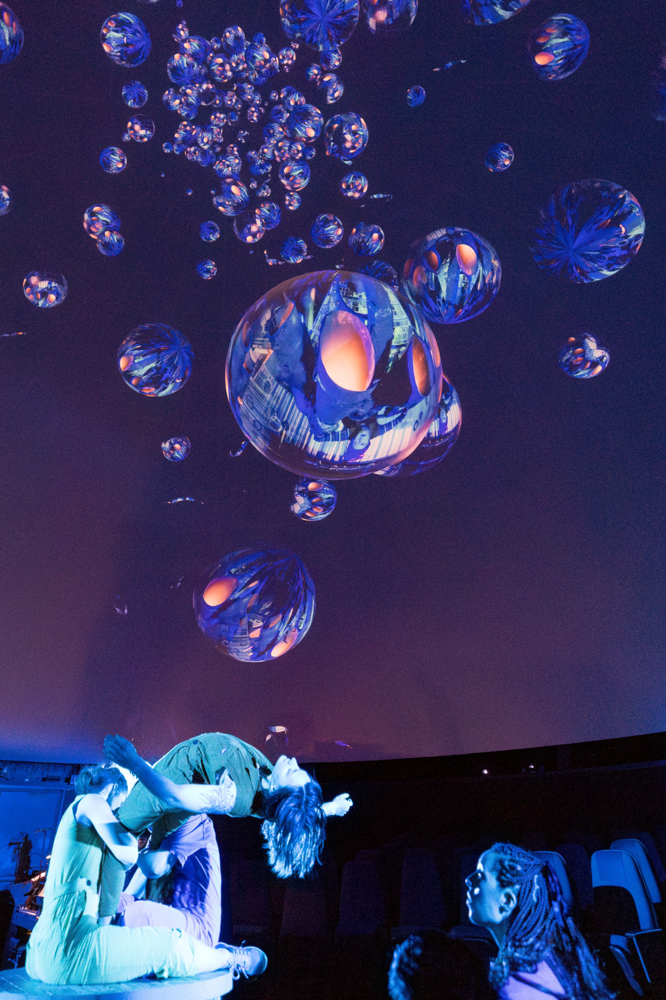

Immersive Post-Production
Processing immersive content is a multi-stage process requiring planning and experience. I've overseen post-production on dozens of XR projects including editing, VFX, spatial audio, and app development.
Every immersive project starts with careful organization—planning each step of the post-production timeline and tracking progress to ensure alignment with your creative vision. I'm passionate about crafting immersive VR narratives through expert post-production.
I specialize in converting 360° video to dome master format for planetarium and fulldome theater projection. This includes proper framing, tilt adjustments, and resolution optimization to ensure your content looks stunning on curved screens. Whether you're creating original dome content or repurposing existing 360° footage, I handle the technical conversion and creative editing to deliver immersive dome experiences.
Beyond editing, I create interactive experiences and virtual tours for VR headsets and online viewing using Unity and 3D Vista. From standalone apps to web-based virtual tours, I can deliver your content on any platform. Learn more about app development services →

Dedicated to delivering the highest quality VR content through precision editing and attention to detail. Every frame is carefully crafted to ensure a seamless, immersive experience.
Software & Tools
Editing Suites
Skilled in the entire Adobe Suite, DaVinci Resolve, and Blender for comprehensive editing capabilities across any project type.
Immersive Processing
Industry-leading software including Mistika VR, Mocha VR, PTGui, Resolve Fusion, and Affinity Photo for specialized 360° and VR work.
Remote Collaboration
Client Stitching & Editing
Offering post-production services for footage shot by clients. Send your raw 360° files and I'll handle the rest—from stitching to final delivery.
Worldwide Workflow
Experienced in working remotely with clients across the country and internationally. Seamless file transfer, clear communication, and reliable delivery.